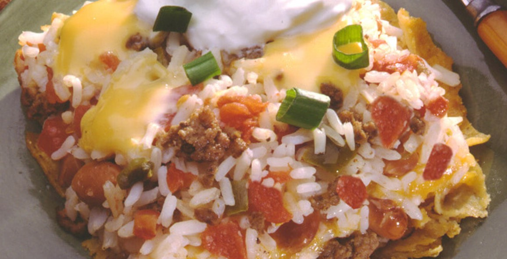
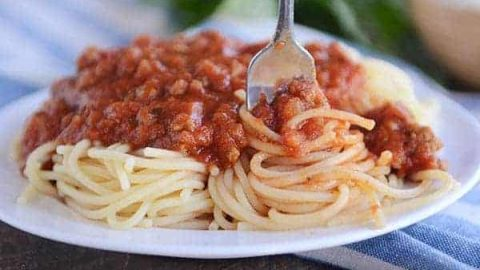
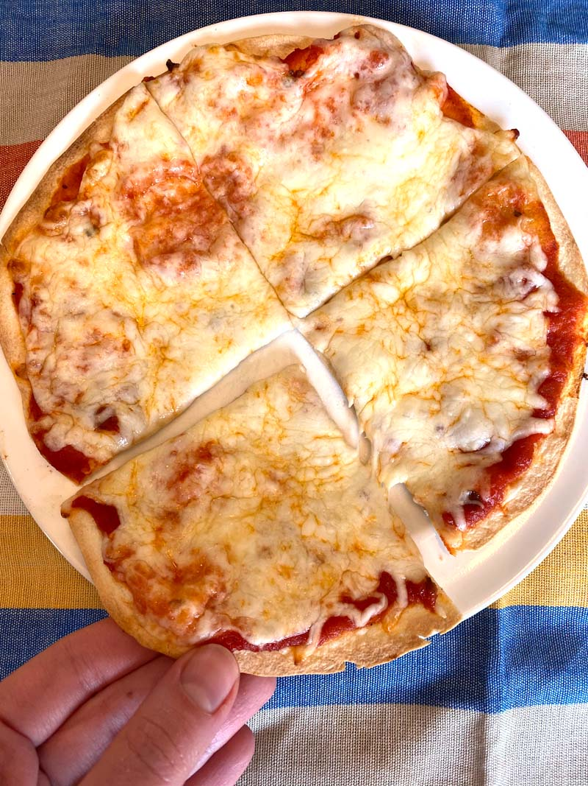

Tex Mex Bake
Ingredients
- 1 Box of rice
- 10 oz green chiles
- 1 lb grond beef, browned(8-10 minutes)
- 4 cups tortilla chips, crushed
- 15 oz pinto beans
- 1 lb Velveeta cheese
Directions
- Preheat oven to 350 degrees F.
- Prepare rice according to instructions; set aside.
- In a medium bowl, combine cooked rice, green chiles, and ground beef; set aside.
- Cover 13x9x2 inch baking dish bottom with tortilla chips. Layer half of the cheeseover the tortilla chips.
top with beans and rice-chile-beef mixture. Top with remaining cheese.
- Bake, uncovered for 15 minutesor until cheese is melted.

Spaghetti
Ingredients
- 1 lb Spaghetti noodles
- 1 lb italian sausage, browned
- 1 jar spaghetti sauce
Directions
- Cook noodles according to instructions; set aside
- Mix sausage and pasta sauce in large pan; bring to boil, then remove from heat.
- Serve sausage sauce over cooked pasta.

Tortilla Pizzas
Ingredients
- 1 package Tortillas
- 1 jar Pizza Sauce
- 1 lb Shredded Mozzarella cheese
- Pizza Toppings (if desired)
Directions
- Preheat oven to 500 degrees F.
- Place tortilla(s) on baking sheet. Lather tortillas thickly with pizza sauce.
- Cover tortillas with cheese, add pizza toppings and extra cheese if desired.
- Broil tortillas for 3 minutes, or until cheese is melted.